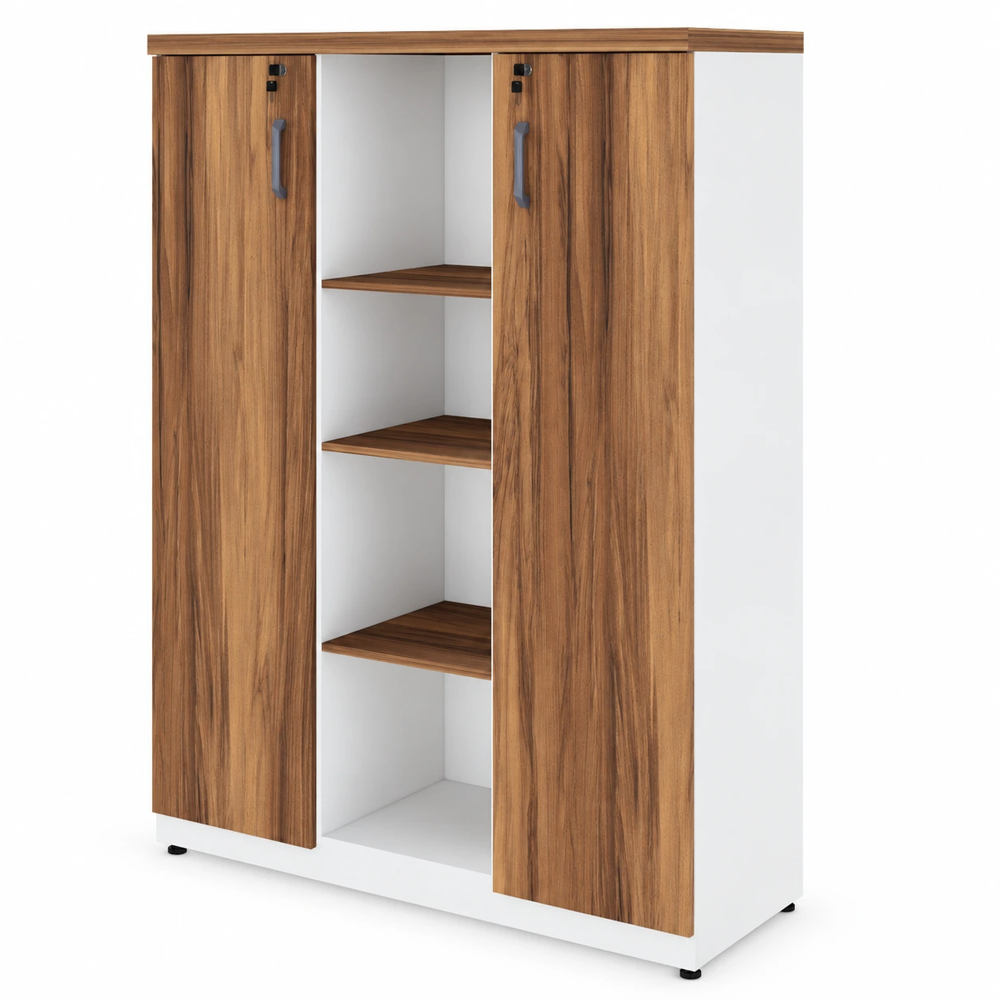

![Solicitar por e-mail](mailto:divulgamoveis@gmail.com?subject=Or%C3%A7amento%20%E2%80%94%20Arm%C3%A1rio%20Alto%20Semi%20Aberto%2015mm%20%E2%80%93%20AR-04%20%E2%80%94%20AR-04&body=Ol%C3%A1%21%20Gostaria%20de%20um%20or%C3%A7amento%20para%3A%0AArm%C3%A1rio%20Alto%20Semi%20Aberto%2015mm%20%E2%80%93%20AR-04%0AC%C3%B3digo%3A%20AR-04%0ADescri%C3%A7%C3%A3o%3A%20Arm%C3%A1rio%20Alto%20Semi%20Aberto%2015mm%20duas%20Portas%20Pequenas%20Puxadores%3A%20anat%C3%B4micos%20tipo%20al%C3%A7a%20de%20pl%C3%A1stico%20Arm%C3%A1rio%20Alto%20Semi%20Aberto%2015mm%20Fabricado%20em%20MDP%2C%20revestido%20de%20melam%C3%ADnico%20com%2015mm%20de%20espessura%20envolvido%20com%20perfil%20T%201%20prateleira%20na%20parte%20superior%20e%201%20prateleira%20na%20parte%20inferior%20%28ambas%20possuem%203%20op%C3%A7%C3%B5es%20de%20regulagens%20de%20altura%29%20Tampo%3A%20MDP%2015mm%20Base%3A%20MDP%2015%20mm%20Laterais%3A%20MDP%2015mm%20Portas%3A%20MDP%2015mm%20Fundo%3A%20TRIPLAC%20Prateleiras%3A%20MDP%2015mm%20Puxadores%3A%20anat%C3%B4micos%20tipo%20al%C3%A7a%20de%20pl%C3%A1stico%20Medidas%20altura%3A%201%2C61%20largura%3A%200%2C80%20profundidade%3A%200%2C40%20Cores%20dispon%C3%ADveis%3A%20Preto%2C%20Cinza%2C%20Azul%2C%20Carvalho%20Dakar%2C%20Nogal.%0AProduto%3A%20https%3A%2F%2Fdivulgamoveis.com.br%2Fproduto%2Farmario-alto-semi-aberto-15mm-ar-04%2F%0AImagem%3A%20https%3A%2F%2Fdivulgamoveis.com.br%2Fwp-content%2Fuploads%2F2025%2F08%2FArmario-misto.webp%0APor%20favor%2C%20informe%20valores%2C%20disponibilidade%20e%20condi%C3%A7%C3%B5es%20de%20entrega.){kind=link}

Ver detalhesArmários e arquivos
Armário Alto Credenza com Nicho – 1,61×1,20×0,45m – NOGAL SEVILHABRANCO- 34415
Código: 34415
Sob consulta
Preço sob consulta
Consulte as opções de acabamento e disponibilidade com a equipe da Divulga. Vamos ajudar você a escolher para o seu espaço.
Sua seleção fica salva neste navegador. Envie sua consulta pelo WhatsApp ou por e-mail. As mensagens incluem os links do produto e da imagem. O e-mail abre no aplicativo configurado no seu aparelho.
Armário Alto Semi Aberto 15mm duas Portas Pequenas
Puxadores: anatômicos tipo alça de plástico
Armário Alto Semi Aberto 15mm
Fabricado em MDP, revestido de melamínico com 15mm de espessura envolvido com perfil T
1 prateleira na parte superior e 1 prateleira na parte inferior (ambas possuem 3 opções de regulagens de altura)
Tampo: MDP 15mm
Base: MDP 15 mm
Laterais: MDP 15mm
Portas: MDP 15mm
Fundo: TRIPLAC
Prateleiras: MDP 15mm
Puxadores: anatômicos tipo alça de plástico
Medidas altura: 1,61 largura: 0,80 profundidade: 0,40
Cores disponíveis: Preto, Cinza, Azul, Carvalho Dakar, Nogal.
Segunda a sexta: 8h às 18h
Sábado: 8h às 12h
![Solicitar por e-mail](mailto:divulgamoveis@gmail.com?subject=Or%C3%A7amento%20%E2%80%94%20Arm%C3%A1rio%20Alto%20Credenza%20com%20Nicho%20%E2%80%93%201%2C61%C3%971%2C20%C3%970%2C45m%20%E2%80%93%20NOGAL%20SEVILHABRANCO-%2034415%20%E2%80%94%2034415&body=Ol%C3%A1%21%20Gostaria%20de%20um%20or%C3%A7amento%20para%3A%0AArm%C3%A1rio%20Alto%20Credenza%20com%20Nicho%20%E2%80%93%201%2C61%C3%971%2C20%C3%970%2C45m%20%E2%80%93%20NOGAL%20SEVILHABRANCO-%2034415%0AC%C3%B3digo%3A%2034415%0ADescri%C3%A7%C3%A3o%3A%20Arm%C3%A1rio%20Alto%20com%20Nichos%20e%2002%20Portas%20%E2%80%93%20Fundo%2015%20mm%20Revestimento%3A%20Cor%3A%20Nogal%20Sevilha%2FBranco%20MDP%20de%2015%20mm%20de%20espessura%20com%20acabamento%20em%20BP%20%28Baixa%20Press%C3%A3o%29%2C%20resistente%20a%20riscos%2C%20umidade%20e%20f%C3%A1cil%20de%20limpar.%20Estrutura%3A%20Corpo%20em%20MDP%20de%2015%20mm%3B%20Fundo%20refor%C3%A7ado%20com%20painel%20de%2015%20mm%20de%20espessura%20%2C%20proporcionando%20maior%20robustez%20e%20estabilidade.%20Portas%3A%2002%20portas%20com%20abertura%20lateral%20e%20puxadores%20met%C3%A1licos%3B%20Dobradi%C3%A7as%20resistentes%20e%20fechadura%20com%20chave%20%2C%20garantindo%20seguran%C3%A7a%20no%20armazenamento.%20Prateleiras%3A%2003%20prateleiras%20internas%20regul%C3%A1veis%20em%20at%C3%A9%203%20n%C3%ADveis%20de%20altura%20%3B%2003%20prateleiras%20externas%20%28laterais%29%20regul%C3%A1veis%20tamb%C3%A9m%20em%203%20n%C3%ADveis%20%2C%20para%20melhor%20aproveitamento%20do%20espa%C3%A7o.%20Nicho%20Central%3A%20Ideal%20para%20itens%20de%20uso%20frequente%20ou%20objetos%20decorativos.%20P%C3%A9s%3A%20P%C3%A9s%20niveladores%20para%20compensa%C3%A7%C3%A3o%20de%20desn%C3%ADveis%20no%20piso.%20Dimen%E2%80%A6%20%28descri%C3%A7%C3%A3o%20completa%20no%20link%20do%20produto%29%0AProduto%3A%20https%3A%2F%2Fdivulgamoveis.com.br%2Fproduto%2Farmario-alto-credenza-com-nicho-161x120x045m-nogal-sevilhabranco-34415%2F%0AImagem%3A%20https%3A%2F%2Fdivulgamoveis.com.br%2Fwp-content%2Fuploads%2F2025%2F08%2F15348980041-3.jpg%0APor%20favor%2C%20informe%20valores%2C%20disponibilidade%20e%20condi%C3%A7%C3%B5es%20de%20entrega.){kind=link}
![Solicitar por e-mail](mailto:divulgamoveis@gmail.com?subject=Or%C3%A7amento%20%E2%80%94%20Arm%C3%A1rio%20Baixo%2003%20Gavetas%20e%20Porta%20%28MISTO%29%20%E2%80%93%20NOGAL%20SEVILHABRANCO%20%E2%80%93%2034422%20%E2%80%94%2034422&body=Ol%C3%A1%21%20Gostaria%20de%20um%20or%C3%A7amento%20para%3A%0AArm%C3%A1rio%20Baixo%2003%20Gavetas%20e%20Porta%20%28MISTO%29%20%E2%80%93%20NOGAL%20SEVILHABRANCO%20%E2%80%93%2034422%0AC%C3%B3digo%3A%2034422%0ADescri%C3%A7%C3%A3o%3A%20Descri%C3%A7%C3%A3o%20T%C3%A9cnica%20%E2%80%93%20Balc%C3%A3o%20Credenza%20com%203%20Gavetas%20e%201%20Porta%20%28Nogal%20Sevilha%20com%20Branco%29%20%E2%80%93%2034422%20Revestimento%3A%20MDP%20de%2040%20e%2015%20mm%20com%20acabamento%20em%20BP%20%28Baixa%20Press%C3%A3o%29%2C%20proporcionando%20maior%20resist%C3%AAncia%20a%20riscos%2C%20abras%C3%A3o%20e%20umidade.%20Combina%C3%A7%C3%A3o%20elegante%20entre%20os%20padr%C3%B5es%20amadeirado%20Nogal%20Sevilha%20nas%20frentes%20e%20no%20tampo%2C%20e%20Branco%20Neve%20nas%20laterais%20e%20base.%20Estrutura%3A%20Tampo%20superior%20duplo%20com%20design%20elevado%2C%20ideal%20para%20impressoras%20ou%20objetos%20decorativos.%20Nicho%20aberto%20abaixo%20do%20tampo%20para%20armazenamento%20de%20documentos%20de%20uso%20r%C3%A1pido.%203%20gavetas%20com%20corredi%C3%A7as%20met%C3%A1licas%2C%20sendo%20a%20%C3%BAltima%20com%20profundidade%20para%20pasta%20suspensa.%201%20porta%20lateral%20com%20prateleira%20interna.%20Sistema%20de%20tranca%20individual%20com%20chaves%20para%20a%20primeira%20gaveta%20e%20para%20a%20porta%2C%20garantindo%20seguran%C3%A7a%20aos%20documentos.%20Ferragens%20e%20Acabamentos%3A%20Puxado%E2%80%A6%20%28descri%C3%A7%C3%A3o%20completa%20no%20link%20do%20produto%29%0AProduto%3A%20https%3A%2F%2Fdivulgamoveis.com.br%2Fproduto%2Farmario-baixo-03-gavetas-e-porta-misto-nogal-sevilhabranco-34422%2F%0AImagem%3A%20https%3A%2F%2Fdivulgamoveis.com.br%2Fwp-content%2Fuploads%2F2025%2F08%2F15348949129-3.jpg%0APor%20favor%2C%20informe%20valores%2C%20disponibilidade%20e%20condi%C3%A7%C3%B5es%20de%20entrega.){kind=link}
![Solicitar por e-mail](mailto:divulgamoveis@gmail.com?subject=Or%C3%A7amento%20%E2%80%94%20Arm%C3%A1rio%20Baixo%20Credenza%20%E2%80%93%201%2C20%C3%970%2C73X0%2C45m%20NOGAL%20SEVILHABRANCO%20%E2%80%93%2034312%20%E2%80%94%2034312&body=Ol%C3%A1%21%20Gostaria%20de%20um%20or%C3%A7amento%20para%3A%0AArm%C3%A1rio%20Baixo%20Credenza%20%E2%80%93%201%2C20%C3%970%2C73X0%2C45m%20NOGAL%20SEVILHABRANCO%20%E2%80%93%2034312%0AC%C3%B3digo%3A%2034312%0ADescri%C3%A7%C3%A3o%3A%20Especifica%C3%A7%C3%B5es%3A%20MDP%2040mm%20Cor%20Nogal%20Sevilha%2Fbranco%20P%C3%A9s%20com%20regulagem%20Controle%20de%20n%C3%ADvelamento%20Garantia%20do%20Fornecedor%3A%2024%20Meses%20Medidas%3A%20Altura%3A%200%2C74m%20Largura%3A%201%2C20m%20profundidade%3A%200%2C45m%20Modelo%3A%20Modelo%3A%20Reto%20Refer%C3%AAncia%20do%20Modelo%3A%20Arm%C3%A1rio%20Credenza%20Itens%20inclusos%20na%20embalagem%20do%20Arm%C3%A1rio%2001%20Arm%C3%A1rio%20Credenza%20Completo%20Produto%20enviado%20desmontado%20%28n%C3%A3o%20realizamos%20a%20montagem%29%20%E2%80%93%20Acompanha%20manual%20de%20instru%C3%A7%C3%B5es%20para%20montagem.%20A%20Transportadora%20n%C3%A3o%20se%20responsabiliza%2C%20no%20ato%20da%20entrega%2C%20por%20subir%20escadas%2Felevadores%20ou%20transporte%20por%20guincho%20em%20apartamentos.%20Eventuais%20despesas%20s%C3%A3o%20de%20responsabilidade%20do%20comprador.%20Confira%20as%20dimens%C3%B5es%20deste%20produto%20e%20certifique-se%20de%20que%20passar%C3%A1%20normalmente%20por%20supostos%20elevadores%2C%20portas%2C%20escadas%20e%2Fou%20corredores.%20Para%20mais%20informa%C3%A7%C3%B5es%2C%20acesse%20nossa%20Central%20de%20Atendimento.%20In%E2%80%A6%20%28descri%C3%A7%C3%A3o%20completa%20no%20link%20do%20produto%29%0AProduto%3A%20https%3A%2F%2Fdivulgamoveis.com.br%2Fproduto%2Farmario-baixo-credenza-120x073x045m-nogal-sevilhabranco-34312%2F%0AImagem%3A%20https%3A%2F%2Fdivulgamoveis.com.br%2Fwp-content%2Fuploads%2F2025%2F08%2F15304454342-desenho-sem-titulo-990x990-1.jpg%0APor%20favor%2C%20informe%20valores%2C%20disponibilidade%20e%20condi%C3%A7%C3%B5es%20de%20entrega.){kind=link}
![Solicitar por e-mail](mailto:divulgamoveis@gmail.com?subject=Or%C3%A7amento%20%E2%80%94%20Arm%C3%A1rio%20Baixo%20com%2002%20Portas%20%E2%80%93%200%2C80%C3%970%2C74%C3%970%2C45m%20NOGAL%20SEVILHABRANCO%20%E2%80%93%2034311%20%E2%80%94%2034311&body=Ol%C3%A1%21%20Gostaria%20de%20um%20or%C3%A7amento%20para%3A%0AArm%C3%A1rio%20Baixo%20com%2002%20Portas%20%E2%80%93%200%2C80%C3%970%2C74%C3%970%2C45m%20NOGAL%20SEVILHABRANCO%20%E2%80%93%2034311%0AC%C3%B3digo%3A%2034311%0ADescri%C3%A7%C3%A3o%3A%20Especifica%C3%A7%C3%B5es%3A%20MDP%2040mm%20Cor%20Nogal%20Sevilha%20P%C3%A9s%20com%20regulagem%20Controle%20de%20nivelamento%20Garantia%20do%20Fornecedor%3A%2024%20Meses%20Medidas%3A%20Altura%3A%200%2C74m%20Largura%3A%200%2C80m%20profundidade%3A%200%2C45m%20Modelo%3A%20Modelo%3A%20Arm%C3%A1rio%20Baixo%20Refer%C3%AAncia%20do%20Modelo%3A%20Arm%C3%A1rio%20Baixo%20Itens%20inclusos%20na%20embalagem%20do%20Arm%C3%A1rio%2001%20Arm%C3%A1rio%20Baixo%20Produto%20enviado%20desmontado%20%28n%C3%A3o%20realizamos%20a%20montagem%29%20%E2%80%93%20Acompanha%20manual%20de%20instru%C3%A7%C3%B5es%20para%20montagem.%20A%20Transportadora%20n%C3%A3o%20se%20responsabiliza%2C%20no%20ato%20da%20entrega%2C%20por%20subir%20escadas%2Felevadores%20ou%20transporte%20por%20guincho%20em%20apartamentos.%20Eventuais%20despesas%20s%C3%A3o%20de%20responsabilidade%20do%20comprador.%20Confira%20as%20dimens%C3%B5es%20deste%20produto%20e%20certifique-se%20de%20que%20passar%C3%A1%20normalmente%20por%20supostos%20elevadores%2C%20portas%2C%20escadas%20e%2Fou%20corredores.%20Para%20mais%20informa%C3%A7%C3%B5es%2C%20acesse%20nossa%20Central%20de%20Atendimento.%20Informa%C3%A7%C3%B5es%20sob%E2%80%A6%20%28descri%C3%A7%C3%A3o%20completa%20no%20link%20do%20produto%29%0AProduto%3A%20https%3A%2F%2Fdivulgamoveis.com.br%2Fproduto%2Farmario-baixo-com-02-portas-080x074x045m-nogal-sevilhabranco-34311%2F%0AImagem%3A%20https%3A%2F%2Fdivulgamoveis.com.br%2Fwp-content%2Fuploads%2F2025%2F08%2F15304453624-desenho-sem-titulo-990x990-1.jpg%0APor%20favor%2C%20informe%20valores%2C%20disponibilidade%20e%20condi%C3%A7%C3%B5es%20de%20entrega.){kind=link}